Asset Cashflow Profile
The class returns an asset price and an associated profile of cashflow timings and cashflow values for a given set of asset prices or rates. The class allows the user to choose a mixture of different rate or asset types as inputs.
Contents
%MATLAB CODE %%%%%%%%%%%%%%%%%%%%%%%%%%%%%%%%%%%%%%%%%%%%%%%%%%%%%%%%%%%%%%%%%%%%%%%%%%% classdef bsAssetCashflowProfile < handle
%%%%%%%%%%%%%%%%%%%%%%%%%%%%%%%%%%%%%%%%%%%%%%%%%%%%%%%%%%%%%%%%%%%%%%%%%%%
How to use the class
There is one way to use this class:
- To produce an asset price and an associated profile of cashflow timings and values for a given set of asset prices or rates.
Properties
[dblMaturityTolerance] : Tolerance for deciding whether maturities are divisible by the compounding period.
Data type : double
%MATLAB CODE %%%%%%%%%%%%%%%%%%%%%%%%%%%%%%%%%%%%%%%%%%%%%%%%%%%%%%%%%%%%%%%%%%%%%%%%%%% properties dblMaturityTolerance = 1/52; end %%%%%%%%%%%%%%%%%%%%%%%%%%%%%%%%%%%%%%%%%%%%%%%%%%%%%%%%%%%%%%%%%%%%%%%%%%%
List of methods
The class introduces one new method:
1)[bsAssetCashflowProfile()] - Function returns an asset price and an associated profile of cashflow timings and values for various given sets of asset prices or rates.
%MATLAB CODE %%%%%%%%%%%%%%%%%%%%%%%%%%%%%%%%%%%%%%%%%%%%%%%%%%%%%%%%%%%%%%%%%%%%%%%%%%% methods
% Constructor function obj = bsAssetCashflowProfile () end %%%%%%%%%%%%%%%%%%%%%%%%%%%%%%%%%%%%%%%%%%%%%%%%%%%%%%%%%%%%%%%%%%%%%%%%%%%
Details of methods
1) [bsAssetCashflowProfile()]
""""""""""""""""""""""""""""""""""""""""""""""""""""""""""""""""""""""""""
Description
Function returns asset prices, cashflow maturities and cashflows values from an input of various asset types, values or rates.
Inputs
[dblRawAssetValuesOrRates] : Net present value of the raw assets or their rate.
Data type : double
[dblRawMaturities] : Maturities of the raw assets.
Data type : double
[sRateTypes] : Specifies the input asset type; 'ZCB', 'Spot' or 'Swap'
Data type : string
[compounding] : Specifies whether compounding is continuous ('cont') or annual ('ann').
Data type : string
[compoundingfrequency] : Defines the annual frequency, 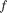, at which the output yield curve is compounded e.g. "2" for semi-annually.
Data type : double
[units] : Specifies if the input data is quoted as percent or not.
Data type : string
Outputs
[dblAssetPrices] : The net present value of the given assets.
Data type : double array
[dblCashflowMaturities] : The timings of each of the cashflows corresponding to a particular asset.
Data type : double array
[dblCashflows] : The value of each cashflow corresponding to a particular asset at the time it is paid.
Data type : double array
Calculations
The function returns asset prices and cashflow porfiles for ZCBs, spots and swaps via different calculations.
ZCB. The outputs here are straight forward. The cashflows are all 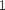 and the maturities and asset prices are the same as those input.
Spot. As with ZCBs, cashflows are all and the maturities are the same as the inputs. The asset value calculation depends on whether the compounding is continuous or annual.
For continuous compounding the asset values are found using the expression:
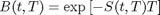
For annual compounding the asset values are found using the expression:
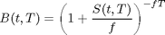
With,
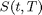 : Spot Rate at time, 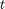, paying at maturity, 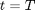.
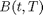 : The price of a zero coupon bond at time, , which pays 1 at maturity, .
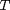 : Asset maturity.
: Compounding frequency (per annum)
Swap. The swap rates are assumed to be the par rates of the market discount curve. Therefore the net present value of the fixed leg is equal to . For this reason we set the swap asset values to . The cashflow maturities are set to be a series with a value at the end of every compounding period until the asset maturity from the raw data. However, if the maturity from the raw data is not divisible by the compounding period and the remainder is more than MaturityTolerance) then the first cashflow maturity is the remainder followed by regular maturities at intervals of the compounding period.
The cashflow values are found using the expression below:
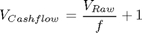
With,
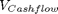 : Value of cashflow
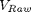 : Raw value of asset.
: Compounding frequency (per annum)
%MATLAB CODE %%%%%%%%%%%%%%%%%%%%%%%%%%%%%%%%%%%%%%%%%%%%%%%%%%%%%%%%%%%%%%%%%%%%%%%%%%%% % methods and functions function [ dblAssetPrices,dblCashflowMaturities, dblCashflows] = ... assetcashflowprofiles(obj,dblRawAssetValuesOrRates,... dblRawMaturities, sRateTypes ,compounding,... compoundingfrequency,units) iNumberofAssetPrices =size(dblRawAssetValuesOrRates, 1) ; dblAssetPrices =zeros(iNumberofAssetPrices, 1) ; dblCashflows = cell(iNumberofAssetPrices ,1) ; % Create a cell array of cashflows profiles for each asset dblCashflowMaturities = cell(iNumberofAssetPrices ,1) ; % Create a cell array of cashflow matrurity % profiles for each asset for i = 1 : iNumberofAssetPrices % Adjust data into absolute amount/values if strcmp(units(i, :), 'percent') dblRawAssetValuesOrRates(i,1) = ... (dblRawAssetValuesOrRates(i,1)./ 100); else end if strcmp(lower(sRateTypes(i, :)), 'zcb') % This is the most straightforward case dblAssetPrices(i,1) = dblRawAssetValuesOrRates(i,1); % Cashflow timings dblCashflowMaturities{i ,1} = dblRawMaturities(i,1); % Cashflow amounts dblCashflows{i ,1} = 1 ; elseif strcmp(lower(sRateTypes(i, :)), 'spot') % Cashflow timings dblCashflowMaturities{i ,1} = dblRawMaturities(i,1); % Cashflow amounts dblCashflows{i ,1} = 1 ; if strcmp(compounding(i, :), 'ann') dblAssetPrices(i,1) = ( 1 + ... dblRawAssetValuesOrRates(i,1)/... compoundingfrequency(i,1)) ^... (- compoundingfrequency(i,1)*... dblRawMaturities(i,1)); elseif strcmp(compounding(i, :), 'cont') dblAssetPrices(i,1) = exp... (- dblRawAssetValuesOrRates(i,1)*... dblRawMaturities(i,1)); end elseif strcmp(lower(sRateTypes(i, :)), 'swap') || ... strcmp(lower(sRateTypes(i, :)), 'par') dblAssetPrices(i,1) = 1; % Count the number of cashflows remainder = mod(dblRawMaturities(i,1), ... (1/compoundingfrequency(i,1))); dblCashflowMaturities{i ,1} = ... (1/compoundingfrequency(i,1):1/... compoundingfrequency(i,1):dblRawMaturities(i,1)); if remainder < obj.dblMaturityTolerance dblRawMaturities(i,1)= dblRawMaturities(i,1) -... remainder ; iNumberofCashflows = ... compoundingfrequency(i,1)*... dblRawMaturities(i,1) ; else iNumberofCashflows = ... floor(compoundingfrequency(i,1)*... dblRawMaturities(i,1))+1 ; dblCashflowMaturities{i ,1} =... [remainder (dblCashflowMaturities{i ,1} +... remainder)] ; end iNumberofCashflows = round(iNumberofCashflows ); % Cashflow amounts dblCashflowTemp = (dblRawAssetValuesOrRates(i,1)./... compoundingfrequency(i,1)).*... ones(1,iNumberofCashflows); dblCashflowTemp( 1, iNumberofCashflows) = ... dblCashflowTemp( 1, iNumberofCashflows) +1 ; dblCashflows{i ,1} = dblCashflowTemp ; % Create Cell Array of cashflow values end end end
end
end